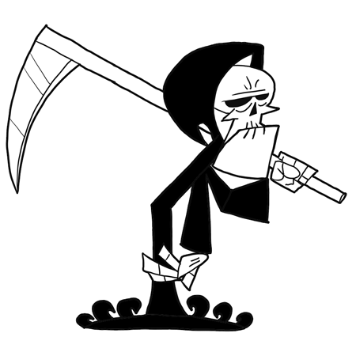
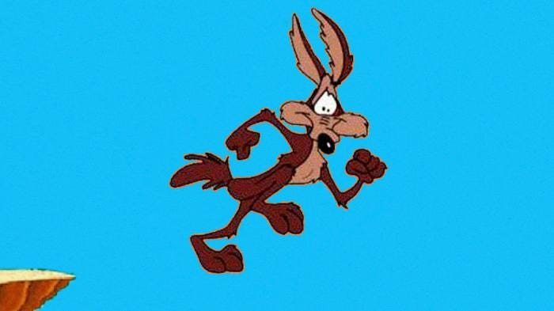
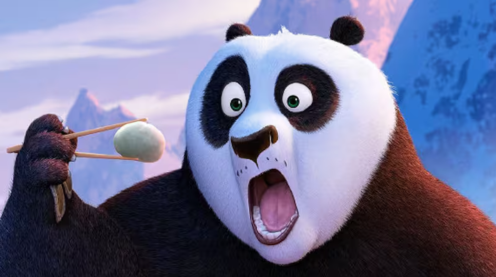
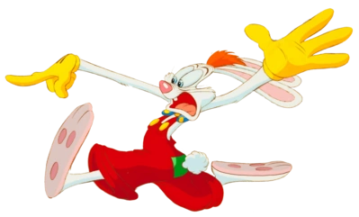

Sophisticated Simpletons
We are the Sophisticated Simpletons. We have a lot of charm and a lot of backstory, but may not be the smartest in the world. We're the lovable group that will steal your heart with our personalities rather than our thought processes, but that does not matter because we work well as a team. This team is regularly defeated, but always comes out on top in spirit and sportsmanship and will do whatever they can to help each other and others when it counts.
Grim
Our Team Leader is Grim. He is powerful and does not tolerate nonsense, but he will stay by his team's side no matter what. This is because he wants to, we swear, he did not lose another limbo contest. Grim is harsh, but in the end cares about his team above all else.
Wile E. Coyote
Our resident runner is Wile E. Coyote. He has been running his whole life chasing someone that keeps getting away, and he is finally over it. Now, confined to a specific area, he is ready to take down anyone that gets in his way.
Po
Our shield is Po. The best shield you could ask for, Po is a non-lean, non-mean, pacifist machine. An excellent dodger (when food is involved) and an excellent team player, willing to sacrifice everything but his lunch to make sure everyone else continues on.
Kronk

Our chef and just all-around lackey, Kronk is an invaluable part of the team. He cooks to make sure our shield is motivated and will show off his prowess as long as he is told exactly what to do and it does not conflict with his inner angel and/or demon.
Roger Rabbit
Our distraction is designated to the one and only Roger Rabbit. He has a history of creating large scale distractions that keep the police and news on his tail and everyone on his team safe. He cares a lot about his team and would not want anything to happen to them. Thank you for your service, and thank your wife for her entertainment!